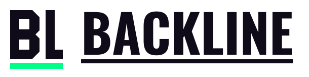
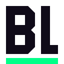

WELCOME & ROLES
A good first hello.
Choose a welcome channel, set up rules acknowledgment, and let members choose from the roles you make available.
Private Studio review copy. Pilot sign-in is available in the Backline app; preview links show pilot information.

A SUBCULT TOOL / DISCORD COMMUNITIES
The tools behind your community. Welcome people, support your members, and give your moderation team the context to do its work.

YOUR COMMUNITY001A welcome message. A clear set of rules. A place to start.
Rules acknowledgedSample content, not a live server or dashboard capture.
THE TOOLKIT / 01—03
Start with the jobs your server needs. Each module is configured for that server and starts disabled until you choose to enable it.
WELCOME & ROLES
Choose a welcome channel, set up rules acknowledgment, and let members choose from the roles you make available.
MODERATION
Warnings, timeouts, and other moderation actions belong in a case history, with a reason and the staff member who took the action.
PRIVATE SUPPORT
Give members a place to ask for help. Staff can claim a ticket, bring in the right people, and close the conversation when it is resolved.
YOUR SERVER / YOUR SETUP
Sign in with Discord. The dashboard checks your access to the server you want to configure.
Choose channels, staff roles, and the settings that fit your community. Review the permissions it needs.
Use commands and member-facing panels in the server. Return to the dashboard for setup and moderation records.
Good tools respect the people using them.
Clear permissions. Deliberate setup. A record of the action.
CURRENTLY / PRIVATE PILOT
Backline is being tested with SUBCULT before broader community installation. The pilot is where we check setup, permissions, and what happens when a real server uses the tools.
Public installation is not open yet. If you already have pilot access, your dashboard is ready to sign in.
Pilot informationBEFORE YOU ASK
Public installation is not available yet. Backline is in a private pilot with SUBCULT; a broader release needs its own installation and operating checks.
No. Modules start disabled and are configured separately for each server. Choose the channels, roles, and capabilities your community needs.
The ticket opener, invited participants, configured staff, and the bot receive access. Discord server owners and administrators retain their inherent access.
The project’s development documentation explains the modules, implementation sequence, and qualification gates.